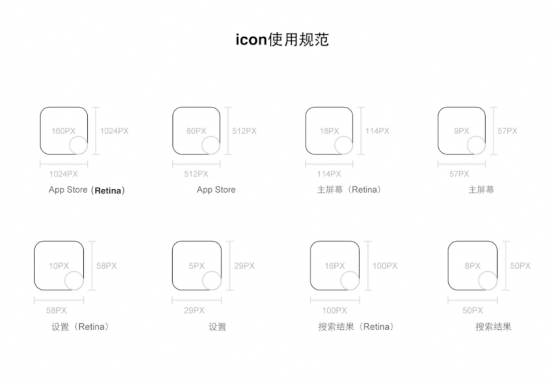
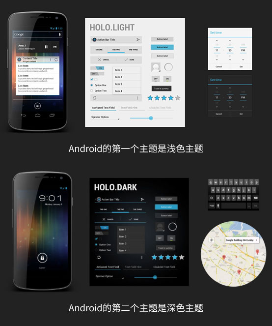
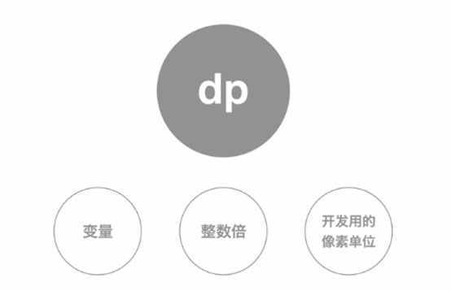

什么是设计规范？
设计规范是由UI设计师定下的对色彩，控件样式，布局排版等制定的一系列规则，用来指导之后的设计工作，确保视觉风格的一致性，控制设计质量，从而提高设计效率。
为谁服务？
开发人员- 完整的设计规范能让技术准确的还原设计样式，而且部分基础的页面能让技术快速搭建。
设计师/团队- 当新人了解产品现状时，需要有一个文档，否则将不断地重复介绍相关的功能，影响工作的效率。
公司- 各个设计的元素必须严格遵循规范，这样才能给用户传达同意的品牌形象，从而潜移默化地进行品牌渗透。
iOS设计规范
- 各个规格的屏幕分辨率
- iPhone 5c：640*1136
- iPhone 5s：640*1136
- iPhone 6： 750*1334
- iPhone 6 Plus：1242*2208
- iPhone 7：1334*750
- iPhone 7 Plus：1920*1080
icon使用规范

文字使用规范
- 【黑体-简】或Heiti SC, 与ios实际效果最为接近的是Heiti SC
Thin,所有字体大小都应该为【偶数】，建议最小文字不小于【22px】
配色技巧
- 配色通常以纯色为主，通用将主色调作为点击色。
Android设计规范
- 各个规格的屏幕分辨率
- 320*480
- 480*800
- 720*1280
icon使用规范

计量单位

- 基础原理是以一倍的大小作为计量单位，
都是整数倍，无论是DP还是Pixel，它都没有一个小数位。